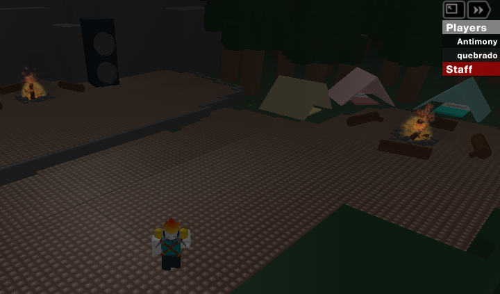
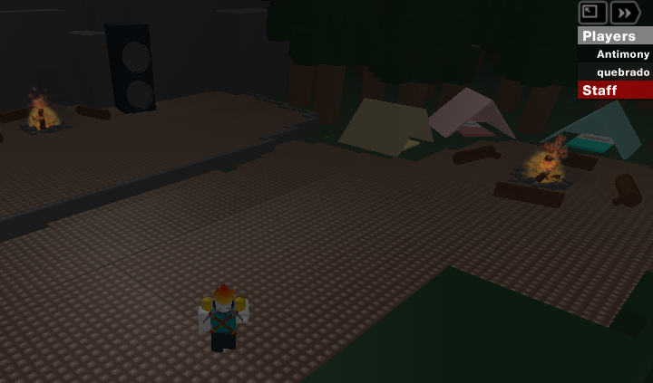
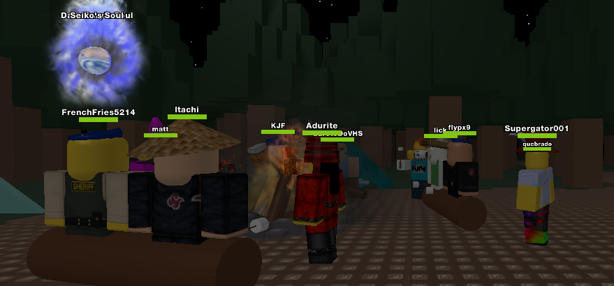
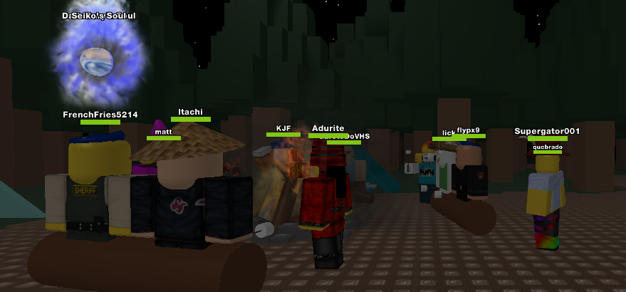
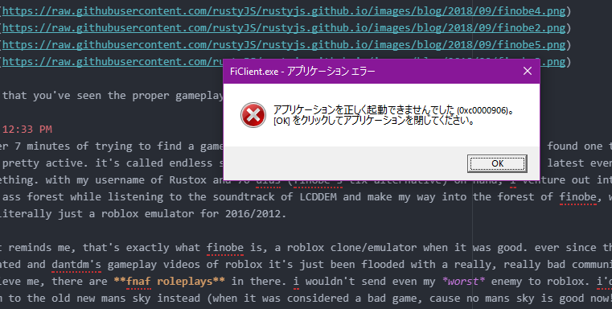
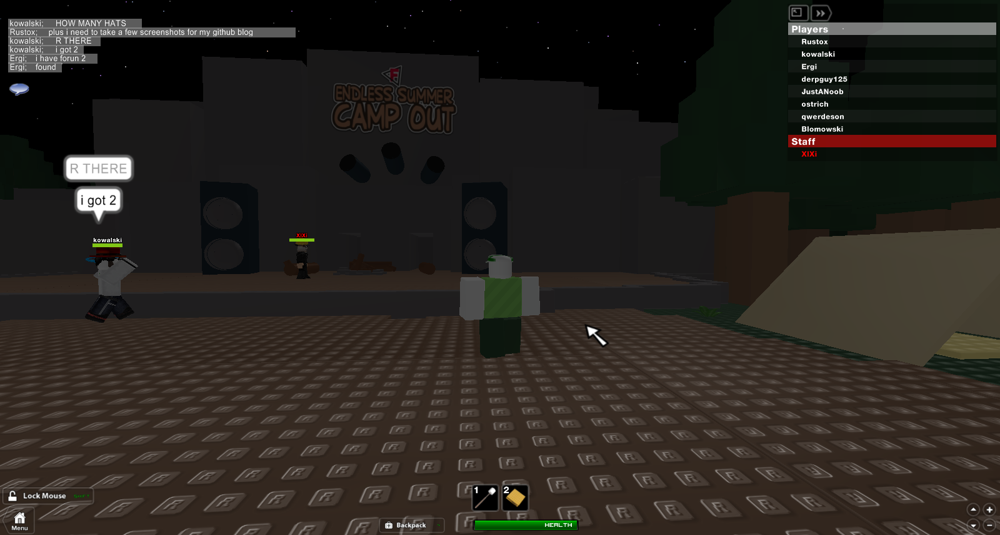
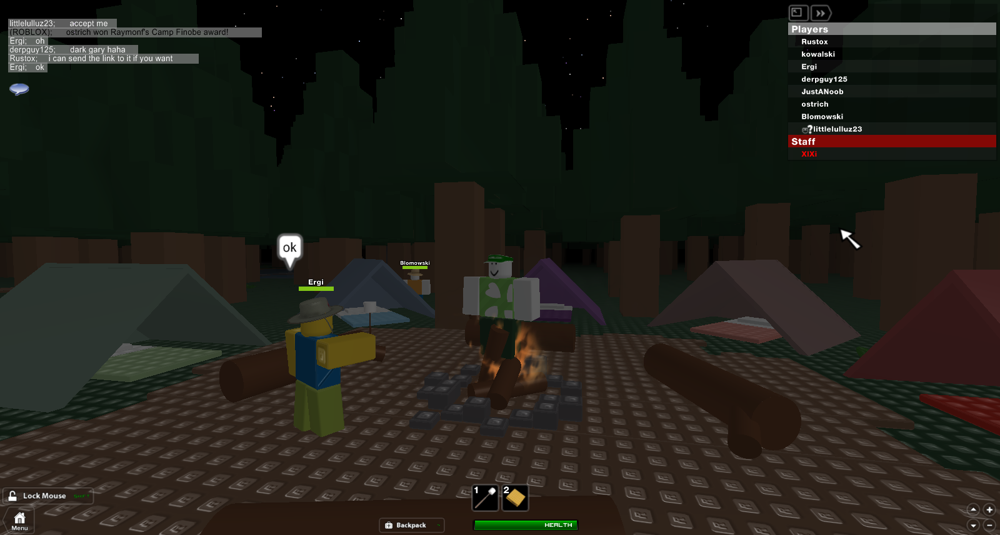
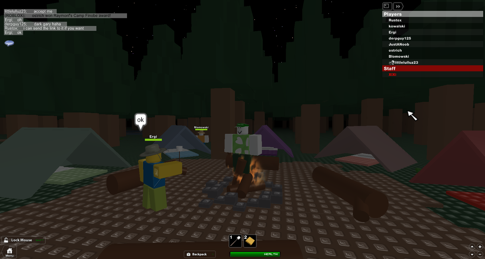

day 9 | the 450% late internet-free finobe r/nichijou groupwatch marathon spectacular++
10:29 AM
as i'm typing this entry in atom, it appears that my internet went down without any warning. looks like i'll have to occupy my own time for the supposed downtime.
well, i guess i can just, go and type whatever i want for a few hours? not gonna lie, that'll just be a bunch of me ranting about crap. seriously, have you guys ever seen what i can do sometimes? i even made an n++ level that has like 2 rotating lasers in it and only me and one other guy managed to beat it. i suspected that he looked at the replay. you always think they're gonna do it different, but nope they do it almost exactly as you do
10:32 AM
do we have a table of contents feature available or is that what those blue link things on all my headers are for?
10:33 AM
forgot to mention that i finally got that dark theme browser extension, so my website is now in beautiful dark colors! that's, like, cool and stuff.
moving on, it's more or less that the internet will probably be back up by when the clock hits PM. i dont know what pm actually stands for but i'm having my thoughts it's any of these options
- past morning
- past morning
- pre-morning just kidding it's past morning
- past morning
if i ramble on for too long i'll have it so that all my paragraphs are sliced per 30 mins, so the next sorta heading will arrive to this blog.md document at 1:03 PM or something
10:38 AM
so i've added a new images folder, i'll probably be posting imagery soon, that is! problem is that first i have to upload the image here, use some .md supported format, and i have no idea if it's actually going to work all at once. i'm saying we have a 50/50 chance over here.
i'm gonna go get something to eat i was drinking pepsi brand root beer for a while
10:42 AM
ok so all that was there were some expired froot loops probably and stuff that isn't food. there's probably like an apple in the fridge but i'm not risking cutting my finger off this time. anyways, something else i wanted to talk about is actually from yesterday, so it's some sorta, "time travel episode" if you will
yesterday night, on the r/nichijou discord (which i can't link cause no internet = no discord access = no invite link) i was supposed to be hosting a groupwatch for a nice long 1 hour and 15 minute shitpost called "khonjin house: the movie", which is a collection of the first 50 khonjin house episodes on youtube. it's marked as age restricted to where you have to sign in/make an account to confirm your age (13+ according to the terms of service on their site) in order to even see any content in the video itself. i think it's included cause of either
- a: all the swears included in it
- b: that one episode that involves the company "big dildos" (not a real company, i have no idea if their facebook page is real though it could've been inspect element'd to heaven or hell)
10:50 AM
moving on from the actual content of the movie, i was supposed to host it at around 8 AM/PM or whatever (at the time being, it was roughly 9:25 PM). which meant i was four hours late thanks to jeik telling me that i was late. now i get that it's like rude and everything but believe it or not my internet was down yesterday from when i woke up, to 12:30 PM, which is a pretty long while, i was waiting roughly 2 hours to get even 2 bars of internet on my switch (that i do own)
needless to say, since i was roughly now 4 and a half hours late at the time, i had no choice but to apologize to the people who were wanting to join (not many, cause of how fucking late i was (presumably (probably (yes)))), and start it anyways
we started at 10:00 PM instead whoops
anyways the people in the groupwatch were me, jitsus (my friend and one of the few writers for a webcomic i work on (more on that like soon)), nutball, and another friend of mine, which means there were a total of like 4 people in the groupwatch at max
needless to say x2 combo except it's not a combo they were 5 lines away from each other, the movie was pretty good. however, due to how late it was (the time was now like 1:00 AM), everyone but me and jitsus were blinking in and out, and nutball and that other one eventually had to leave. if i were to place rankings for how long people stayed, these would be the results
- 1st place: me (i hosted the entire thing and the few bonus videos at the end)
- 2nd place: jitsus (was there mostly the whole time and eventually left at around 1:30-2:00 AM)
- 3rd place: nutball (was blinking in and out)
- 4th place: that other guy (same as nutball, but more severe and was booted out by rabb.it much more often)
needless to say, we all liked the movie. here's my review coming right atcha in the next header like kirby back atcha
11:00 AM
movie review 001
title: khonjin house: the movie
runtime: ~1:15:00
plot: who the fuck talks about a plot in khonjin house smh
the review: nice shitpost
rating: 5 pepperoni pizzas out of 5
anyways im gonna go and probably add a new page here or something for the site itself, maybe split this per month
11:16 AM
i did that
11:35 AM
PRAISE THE LORDS THE INTERNET IS BACK
11:58 AM
in conclusion of the internet crisis i will state that with every event, comes a moral. and whats the moral, you may ask?
im never going to host a groupwatch ever again the last one was a complete disaster gosh
well, the next part of our situation station trip is a game called finobe. you might might have heard of it before, but you haven't seen what the gameplay looks like! with the revolution of 256-bit color graphics from the opposite of a beige-enough device and github flavored servers and markdown, i will show you the wonders of I M A G E R Y!
12:20 PM
i had to find the images first but now that i have found them, here they will be! credits and kudos and my club penguin credit cards (joke) to these people for the screenshots
- VelaBird Sb.#0230 (1/3/4)
- myself (2)
- XlXi#7091 (5)

 

 

now that you've seen the proper gameplay of finobe, it's time to choose the game!
12:33 PM
after 7 minutes of trying to find a game despite there only being like 2 active games, i've found one that was pretty active. it's called endless summer camp out, and by what i've heard its finobe's latest event or something. with my username of Rustox and 70 dius (finobe's tix alternative) on hand, i venture out into a big ass forest while listening to the soundtrack of LCDDEM and make my way into the forest of finobe, which is literally just a roblox emulator for 2016/2012.
that reminds me, that's exactly what finobe is, a roblox clone/emulator when it was good. ever since the bad updated and dantdm's gameplay videos of roblox it's just been flooded with a really, really bad community. believe me, there are fnaf roleplays in there. i wouldn't send even my worst enemy to roblox. i'd send them to the old new mans sky instead (when it was considered a bad game, cause no mans sky is good now!)
oh and heres the site to finobe
and now, the next few headers will include documentation of my gameplay
12:48 PM

windows you are so full of shit sometimes
thankfully i know how to get around this, windows defender is just overprotective a lot
1:09 PM
so we begin with disappointment that the event is going to close relatively soon, but by the looks of it we don't leave empty handed! i found like 40 adurite buckets and i picked up one of them and i eventually just won the reward.

speaking of which, here's the rewards
- adurite bucket - pretty fancy, occasionally found in a tree
- camper hat - they're everywhere, started
- marshmallow head - eat too many marshmallows and explode
since the event was ending soon, there wasn't much i could really do and there wasn't a whole lot to explain, but here's some highlight screenshots

 



truly, these are the saddest moments of 2018


my personal thoughts about this event were "meh, they're fine, i guess". there wasn't all that much to do, since the event closed in 10 minutes since i first joined, but i did get that nice adurite bucket! hopefully i'll actually be there to see the entire next event. rip endless campout, you weren't very endless in the end, cause you, uh, ended. this is so sad can we not use this meme again
1:39 PM
since it's sunday, school week is coming up relatively soon, and by soon i mean literally tomorrow, so i guess i can talk about something else in the meantime. lets see... oh yeah! remember at the start of this day when i stated something about n++? well, i can assure that yes, n++ is a game, and yes, it's fun, and yes, i own it. the rundown of n++ is pretty freakin' simple. you're a ninja, get the coins, open a switch, get to the door, rinse and repeat. it's so simple, it can be put on a list, watch!
- get coins
- open door
- enter door
- rinse and repeat
see how easy and simple it is? thats why n++ is so great as the platformer it dreamt of being years ago when it was just a flash game called n. indie titles are making their way to switch much more often than it was expected (for me, at least), and i find that to be pretty interesting. maybe they're going to port nuclear throne next! i haven't actually played that game before, but i watched a few development streams a long time ago. needless to say, it looked fun.
let me tell you the story of n++, as in, the game story. yeah, this game has a story for just a simple freaking platformer with some of the best controls i've ever used, ever. you're a ninja, and since you're a ninja, you have a limited lifespan (the coins mentioned previously increase your timer by 2 seconds), and its a robotic future. get to the switch, open the door, and make your way through levels.
oh yeah, that reminds me again, n++ has probably the most levels in a platformer.
ever.
the game lasts about more than 2000 levels making it chockfull of content and otherwise. anyways, back onto what i'm actually doing with the game, i originally had it pirated on pc a few weeks back, but then the unthinkable happened... right before the khonjin house groupwatch (when i still had n++ pirated on pc), i was told that we're going school shopping. now, don't get me wrong, it wasn't the worst thing of all, but it caused me to delay the original date for the khonjin house groupwatch until yesterday, in which i was still late as hell.
what does this have to do with n++, you may ask? well, near the end of the shopping spree at every single store ever made, ever, something caught my eye. it was a $99 eshop gift card! the switch, 3ds, and wii u are all connected to the same store service. it's called "nintendo eshop", and for a while, i never really used it because most of the stuff was literally way too expensive for me. after i bought the card and after i was back from that school shopping vacation, i decided to redeem the card and buy 2 games.
- n++: the whole point of that backstory!
- puyo puyo tetris: 4-wides
- possibly minecraft, i still haven't made my mind on that yet
now that i had properly support metanet software (the developers of n++), i could finally play n++ like anyone else could! plus, the switch was faster than my pc, so i could call that a bonus too. the even better thing is that i could finally play user-made levels without having to resort to getting the file for the level and shoving it into the game in which i head on over to the level editor screen to play the level. man, that process sucked.
2:16 PM
anyways, back onto where i was supposed to go, i just really like n++, and rn i contributed 2 levels to the user-created levels, it's ever growing and still fascinating to see what users can come up with. onto something else.
the other thing i'd like to clear up is what exactly r/nichijou is. it's a discord server for the anime nichijou: my ordinary life, a pretty good anime series that has an over-the-top budget and a slice-of-life touch to it. there's been a lot of stuff going on over there lately like the groupwatch i talked about earlier, along with a few other events back in january to february which are like, controversial, and it's about my own webcomic before it really like picked up steam over the last few months
because of the controversial topics, i always thought i was just one of the "off" users on the discord to some people. however, i shouldn't let that wear me down, at all. i should be thankful i'm still on the server after those episodes. plus, i met a few new friends (not really "new" anymore but still) there too, heres a few of them
- dew - one of my closest friends on this server, we don't really share the same interests, but we're on good terms and he works on a novel series called
r/nichijou: my ordinary discord, and i was featured in the second volume! there was this scene where i was stuck in a shopping cart full of waffles, and then i crashed into something along with someone else. not sure who exactly since i can't really make up my mind. there was also that other chapter thats literally just calledrusty, and let me just say this now. it's one of the best things i've ever read, ever. it made me cry the first time and it was with joy. tears of joy and mild self-deprecation. oh, and dew is a big supporter of mai from nichijou, he has like a ton of profile pictures of her, not gonna lie. they're blessed af - jitsus - you've heard of him last time, this was where he was when i first met him, i think! he has some pretty great drawing skills and he's working on his own novel series too!
- scorcho - same as jitsus, i met him from the discord at first and he has some pretty good drawing skills. he's a big fan of megaman!
- nox - he was on the server, but him and shirt later got banned for abusing a bot that was once on r/nichijou called
nano, which now i also help work on. the bot started to like say stuff, which was eventually figured out that nox and shirt had set up that using a command that allowed nano to say whatever the devs wanted it/her/whatever to say. nano is yet another character from the nichijou anime, and is also featured on the server icon. however, everyone seems to be into mio more or something. waifu wars, anyone?
man, i love that server. i wouldn't know what to do without being there in the first place! everyone's just always having a good time usually and thats why it's on the top of my server list.
i guess that concludes r/nichijou's time in the spotlight for this blog post. now back to stuff i have in my head i want to let out, and otherwise!
2:32 PM
i have just realized it's cirno day (september 9th (9/9)) god damnit i could've used that for the title why am i so forgetful all the time aaaaaaa
3:08 PM
well after taking a short nap im gonna continue on with my rambling and maybe include a few images
so im currently eating like 2 slices of watermelon at the moment while talking with my other close friend infinitysnapz via anydesk while watching every single battle for dream island episode up to season 4 episode 12
yknow bfdi sort of has a bad rap on places that aren't related to the object show community, which bfdi pretty much created. into detail, battle for dream island was a monthly-ish animated series created by huang brothers cary and michael, which later expanded into a webseries with millions of views per episode. however, season 4 (battle for battle for dream island/bfb) isn't as good as the other 3 in my opinion, all the characters got dumbed down a bit, and the animation is slightly cheaper. i will say the tactics they used were pretty cool.
if i were to pin point the person who does the best job working on bfb, im going to put my 2 cents to michael huang. his style fits well with the hand-drawn assets instead of using symbols for all the mouths, eyes, and legs. his method of spline tweening ends out in a nice, smooth result that can really save time with animation. this explains how season 4 has already got more episodes than seasons 2 and 3! heres a table from most to last
editors note: im not fixing this table
season | episodes --- | --- 1 | 25 4 | 12 2 | 5 3 | 1
seasons 2 and 3 have very few episodes because season 2 was too hard to produce and the episodes were taking way too long to come out, and episode 6 never really came out because of it, and has been classified cancelled. season 3 only has one episode, but the huang brothers haven't actually "cancelled" it, but BFB is their current project.
3:52 PM
im currently still on season 1 during my bingewatching, i've been finding a new jekyll theme that i want to try out, it's going to be a simple change, and it actually looks better than just markdown. i'll get to work on it relatively soon.
5:24 PM
it failed, obviously. anyways, im currently on season 1 episode 16 where all the contestants are replaced with puppet versions instead of being animated for an april fools prank
needless to say i think people got fooled real nice
5:31 PM
ever since today there's been this one fly just buzzing around in my room and it hasn't decided to move to another room, like, at all. whats it's problem? moving on to the bingewatch, im currently on episode 16, as before, and apparently the ending references raywilliamjhonson in a way, which is cool back when the video was uploaded on youtube, i guess.
you know i always wondered whatever happened to the old days of youtube before india took it over and are literally one of the most subscribed channels on youtube now. pewdiepie is declaring like a "joke war" on them per say but i still think it's kind of harsh, someone could take it the wrong way and start becoming racist towards everyone whos actually from india. however, i'm from canada, so i wouldn't know how it feels to be in another country. the closest to that was when i was at a vacation during halifax, but thats a different story for another day
an actual different story i can discuss now is something that im only explaining now cause on r/nichijou theres currently this part where theres a user names ishran and apparently two ishrans joined on the same time only delayed by a few seconds, thus causing me to be confused on if thats his alt. the surprise is, it isn't! but he did have this cool image he wanted to share (not made by him but still cool nonetheless)

for a picture with a cute genius girl and a giant death robot im not a big ol' fan of science to be honest, it's not very interesting and school pretty much does the opposite job of trying to appeal it to me, it only wants me to not, y'know, do science-y things.
however, i will be thankful for what science has done, they helped invent a lot of cooler-looking things! for example, theres also like the worlds fastest rubik cube solver! that machine can solve any cube in seconds! i wonder if they've cracked the pentagon one yet where instead of a cube its like a pentagon for each face. however i've seem to dislocated where it actually went to begin with.
6:00 PM
and now im typing this paragraph with one of my usb keyboards i bought last time i was on a vacation like the one from before. i like how its a usb keyboard, because the laptop one was getting too small for me in my opinion. acer is good with their laptops, but still, not everything is perfect. like some people say, you can't please everyone.
personally, i think that my razer keyboard is much better than the one i have for my acer aspire, which is the laptop i've always been using for the last few years.
bingewatch progress: season 1 episode 18, this is the episode where one of the 20 picked recommended characters try and get a chance to join the battle for dream island. this is also where like a couple of other times, the voting system changes for the episode only, where the eliminated contestants vote for which one of the remaining contestants choose who they want eliminated.
back on the topic of bfdi, i feel like their newest season is more on the quantity side over quality, like ive said like two or more times before. but i really mean that thats what they're doing. how else did they manage to get 12 episodes done in roughly a few months? but, now that the school year is starting up again for them, bfb will be getting very notable slowdowns, and thats already been discussed on cary's vlog channel, which is named humany, where cary pretty much just uploads daily videos of whatever he's doing. it's like this blog, but in video form, and not about me in particular.
but, there's nothing i can really do about that, honestly. all i really can do is put in my 2 cents to michael's discord since the other times i tried talking to cary on discord he always forget to respond. michael on the other hand usually replies within a few days at most or when i bump the direct message conversation.
if someone where to ask me what to watch first when watching the entirety of bfdi, i'd tell them to check out the seasons in chronological order, from seasons 1 to 4
now, the moment everyones waiting for me to cover while i watch bfdi. people reading this part of the article, i'd like to introduce you to one of my biggest projects ive ever made, in both how difficult and long it is. the webcomic is called nichijou no gaiden. this is what i've been working on as a hobby/passion project since all the way back on january 2nd, 2018.
i'd like to think of that day as "universal doomsday" cause of the old title of nichijou no gaiden, which was called... nichijou season 2. the worst title for a project of which it looks similar to the fourth season of bfdi and has a pretty much non-existent budget since i pirated most of the programs i use to make the assets and otherwise. i have some wallpapers to show what it looks like! here are the wallpapers from the repository for my webcomic.


6:31 PM
continuing onto the topic of nichijou no gaiden, it all began when i joined the r/nichijou discord on january 2nd, and proposed the original season 2 idea on the server. the people there at the time stated that they were fine without a season 2. after making the intro hastily in adobe animate in under a day and sub-par assets made, thats where i was currently at with the project. #reboot was made, a new sticky was made on the subreddit, and we were off!
the first problem with the original season 2 is the context of the art style being used, and the limitations of what i can do. the art style ive been using if you havent noticed is the bfb art style, but with a few differences here and there, such as the backgrounds being pastel at first.
after a month for so, a user named nicnl posted something on the subreddit of him throwing in his 2 cents about the project, and was utterly disgusted by it. i handled this with a terrible response, and im pretty sure hes despising everything i've ever done. i wish i was still able to talk to him about what i did at that time and that im honestly very sorry for the mistakes ive done towards him.
the situation was dire, and i was also just being an all-out asshole. this ultimately led to my reputation on the discord being worsened and the moderation team forcing me to move anything nng related to a new server. this is what led to the team gaiden discord being developed. however, as i said before, i should be thankful for the fact that they let me stay on the r/nichijou discord.
other reasons that could be contributed to the move back then was me referencing bfdi and mentioning the project in #general. this was when the project was recently renamed to the name we have now , also because of the reddit post from nicnl.
what did i learn in conclusion? don't be a salty asshole who doesn't take criticism well
hopefully ill get episode one finished in early/late 2019
10:31 PM
and the spectacular ends here! woo, that was a lot to talk about. hopefully they'll be shorter tomorrow, but i can't really say for guaranteed. day 10 will include the school stuff and maybe some more looking back at previous times, maybe a discussion about what team gaiden itself actually is. see you tomorrow!